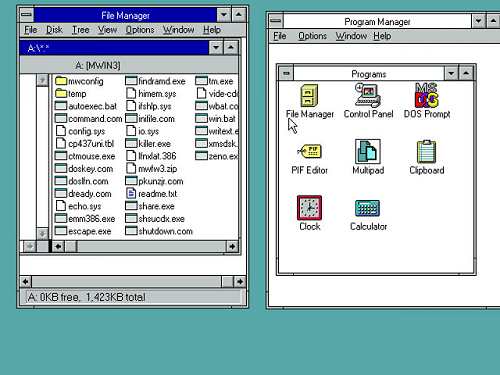
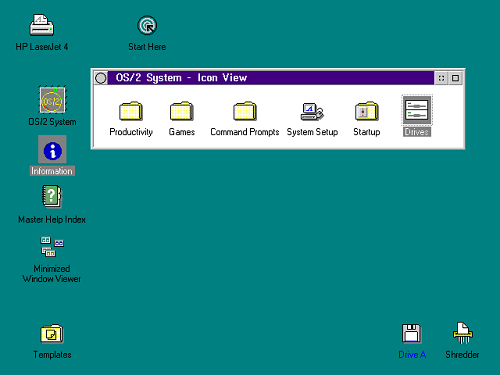
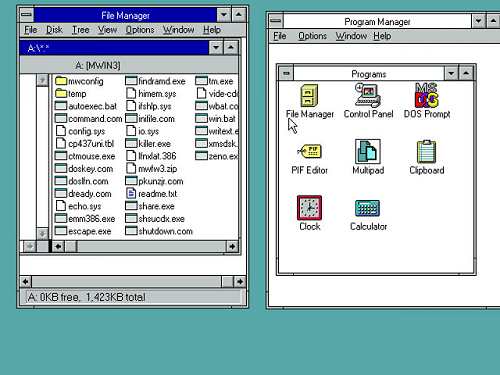
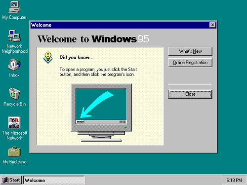
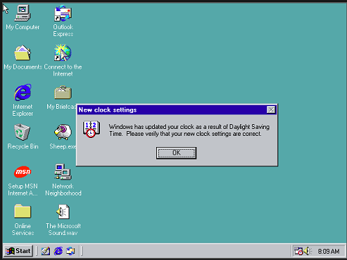
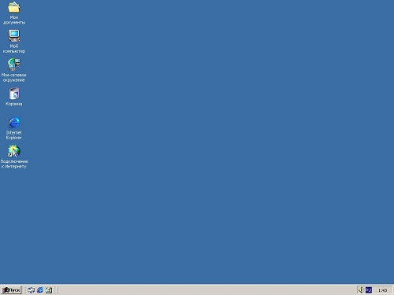

Windows 3.11
По сути это первая нормальная Windows с нормальной мультиокнностью (украденной у OS/2 от IBM).
 Скриншот Windows 3.11 Скриншот OS/2
По сути это первая нормальная Windows с нормальной мультиокнностью (украденной у OS/2 от IBM).
 Скриншот Windows 3.11Именно с этой Windows впервые появился Пуск, она начала приобретать знакомый нам вид.
 Скриншот Windows 95Сначала даже не понятно, чем она отличается от Windows 95, потому что дизайн по сути не изменился. Но поменялись Проводник, Панель задач, обновился Internet Explorer и так далее.
 Скриншот Windows 98Первая Windows NT, которая вышла в массы (NT - значит, что она больше не зависит от DOS)
 Скриншот Windows 2000